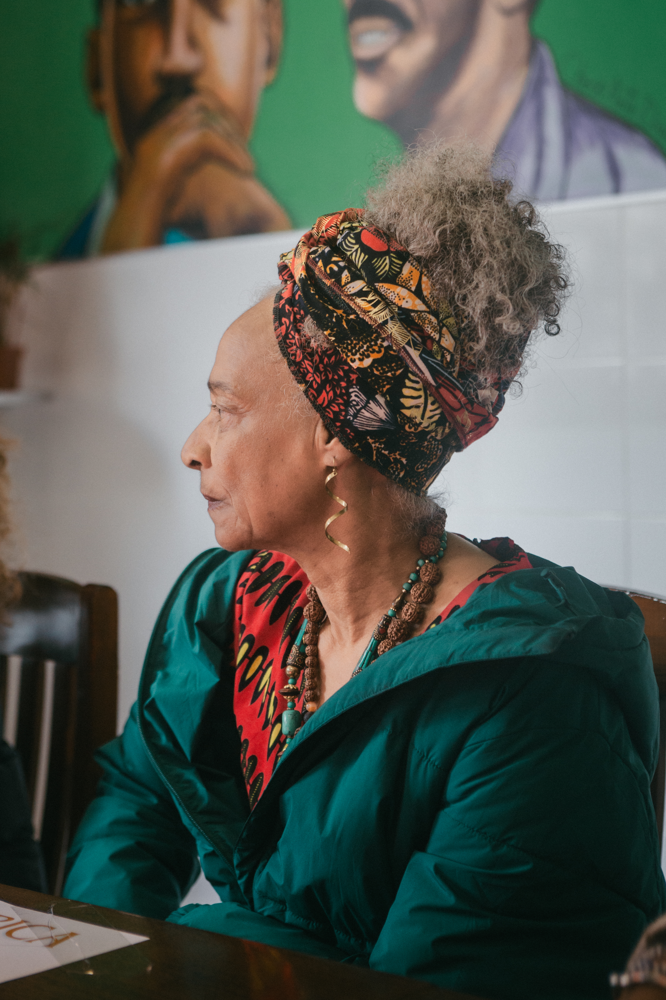
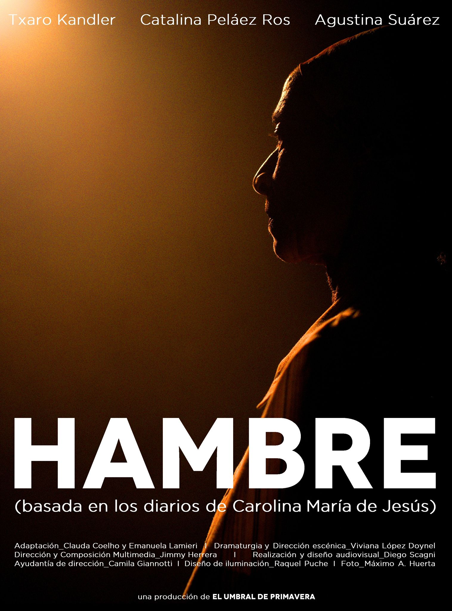
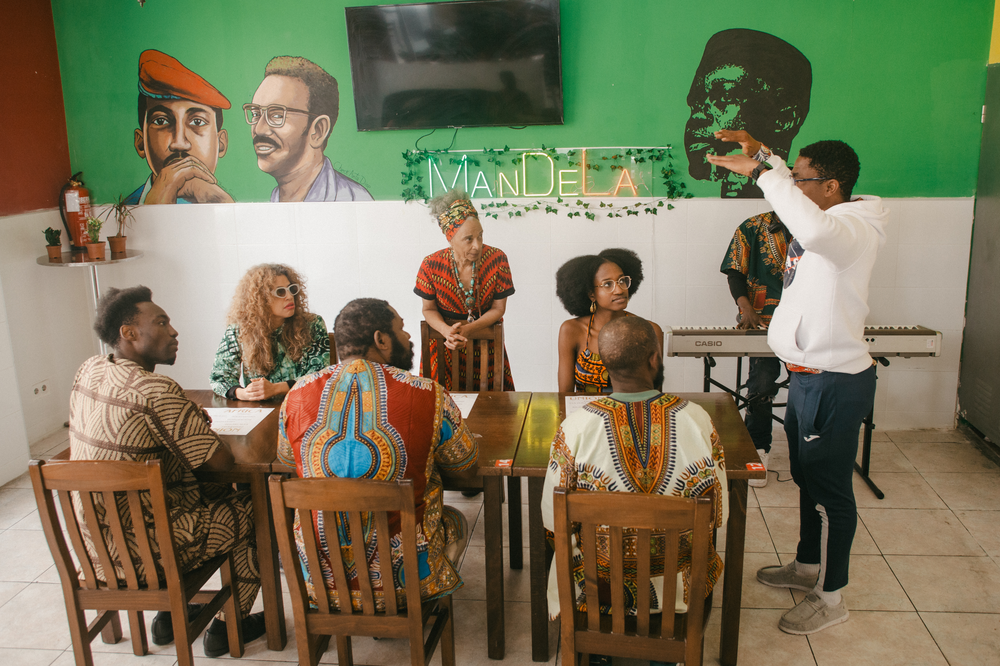
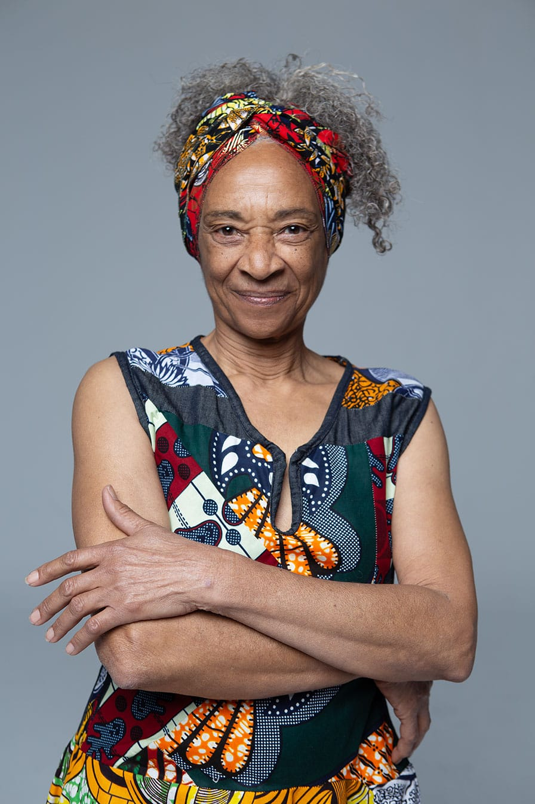

Interpretación para pantalla y escena
La verdad
en primer plano.
Una presencia que escucha, transforma y permanece.
Ver showreel
Madrid
ES / 2026
ES / 2026
02Sobre mí
Cuerpo, voz, presencia
El personaje empieza donde termina la pose.
Txaro Kandler trabaja desde la escucha y la precisión, buscando en cada personaje un gesto propio, una respiración reconocible, una verdad que no necesita explicarse.
Su recorrido atraviesa el cine, el teatro y la televisión. Le interesan las historias que dejan espacio a lo humano: lo que tiembla, lo que calla y lo que decide quedarse.
03Showreel
Una selección en movimiento
El trabajo
habla solo.
04Backstage
Fuera de plano
El instante
antes de entrar.



05Contacto